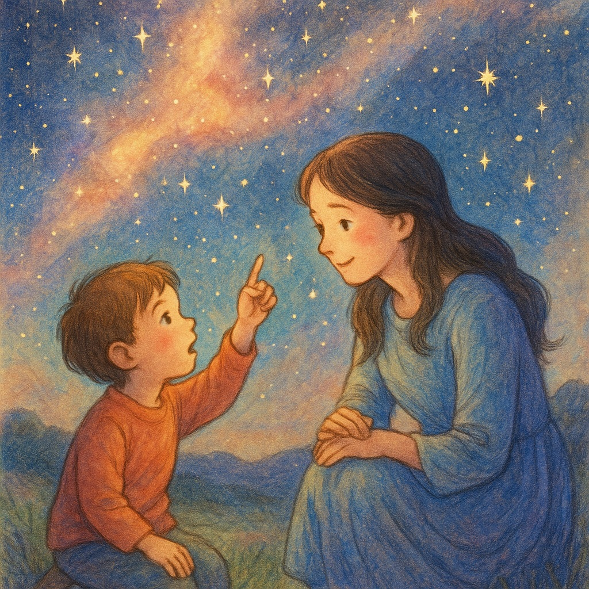
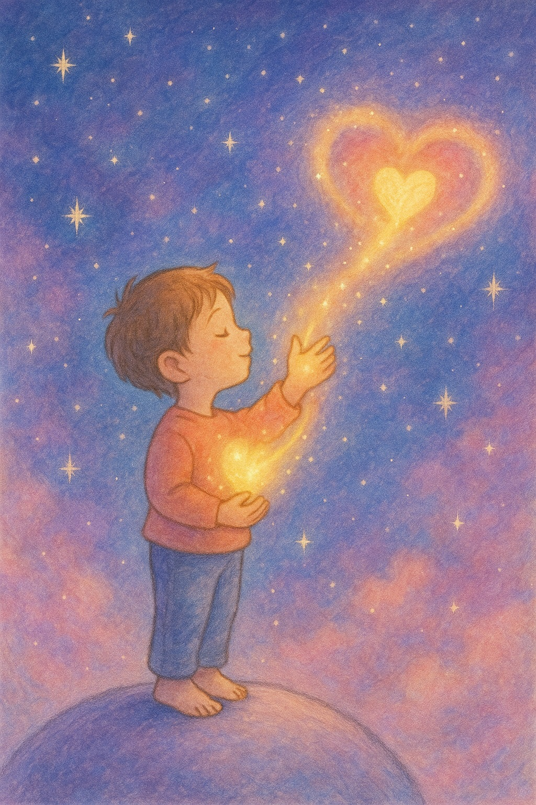
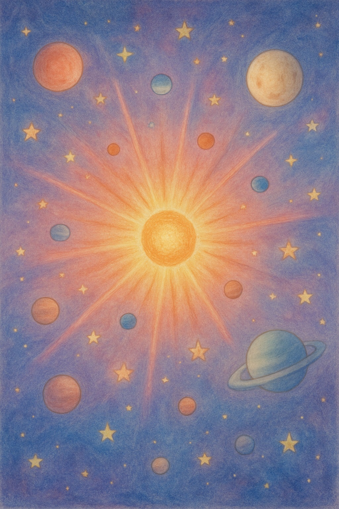
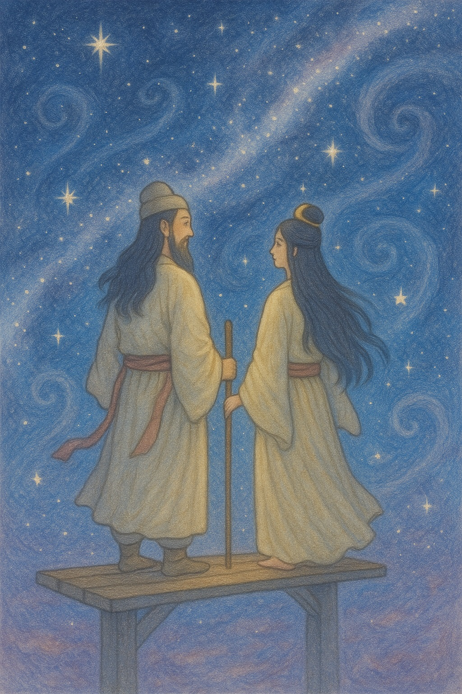
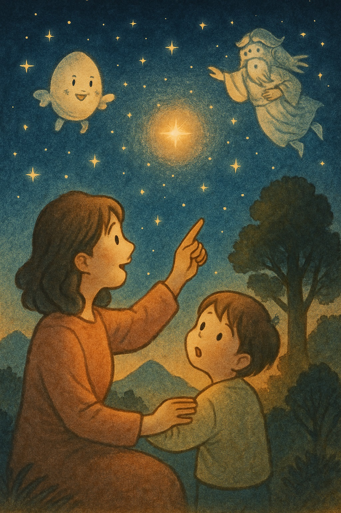
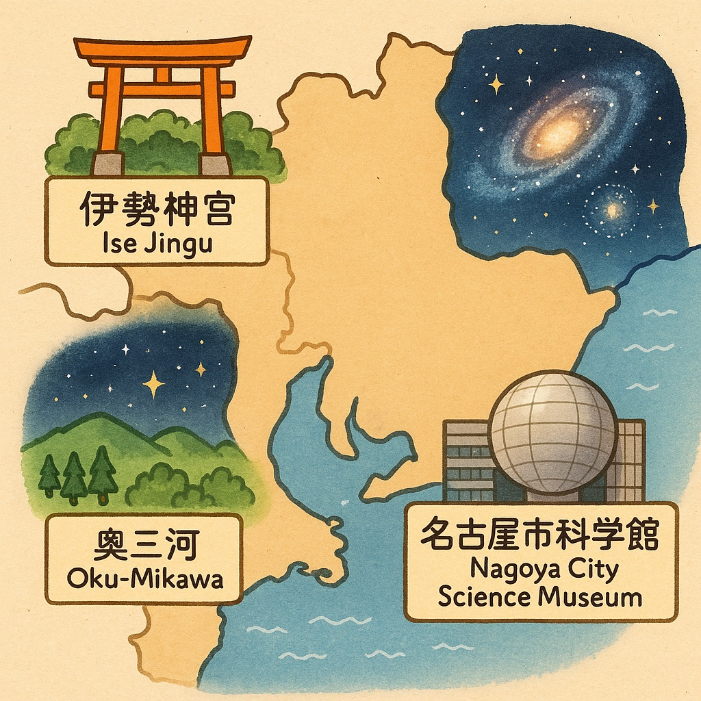

【絵本で学ぶ宇宙の始まり】「宇宙ってどこから？」子どもの好奇心に答える日本の神話：ママの心にも響く、根源の物語
「ねえママ、宇宙ってどこからきたの？」
子どもからの素朴な質問に、ドキッとしたことはありませんか？
私たち大人も、ふとした瞬間に「私はどこからきたんだろう」「なぜこの世界に生まれたんだろう」と思うことがありますよね。
日々の忙しさのなかで忘れがちなそんな問い。でも、宇宙のはじまりを知ることは、自分自身を知る第一歩になるかもしれません。
1. 宇宙の始まりを学ぶ意味
宇宙のはじまりを学ぶことは、「私ってなに？」「なぜ生まれてきたの？」という根源的な問いへのヒントを得ることにつながります。
それは、単なる知識としての学びではなく、心の成長や、人生の目的を見つける助けになるのです。
2. 科学が教える宇宙の始まり（ビッグバン）
現代科学では、宇宙は約138億年前、「ビッグバン」と呼ばれる大爆発によって誕生したとされています。
はじめは一点にすべてのエネルギーが凝縮されていて、それが急激に膨張し、今の広大な宇宙が形作られていったという考え方です。
星も、銀河も、私たち人間も、すべてはこのビッグバンから始まりました。
3. 日本神話における宇宙の始まり
でも、科学とは別の視点から「宇宙のはじまり」を語る方法があります。
それが「神話」です。
私たち日本人の祖先は、「この世界はどのようにして生まれたのか」を物語として語り継いできました。
はじめ、天と地は分かれておらず、泥のような、形のない混沌とした状態だった。
そこから、最初に三柱の神（造化三神）が現れ、やがて天と地が形をなし、高天原（たかまのはら：天界）と、葦原中国（あしはらのなかつくに：地上の世界）が分かれていった。
この物語は、私たちが「何者か」によって生み出されたこと、そして世界が秩序をもって広がっていったことを教えてくれます。
子どもたちにとっては、科学的な理論よりも、こうした神話の方が心に残りやすく、感覚的に理解しやすいかもしれません。
4. 日常と宇宙のつながり
子育てや家事に追われる日々。でも、そんな日常のなかにこそ、宇宙とつながるヒントがあります。
夜空を見上げるだけで、「いまここ」と「宇宙のはじまり」は地続きだと感じられます。
「私は宇宙の一部なんだ」と思うと、ちっぽけなことに思い悩む気持ちが、ふっと軽くなるかもしれません。
5. 東海地方で体験できる、宇宙と神話の場所
- 伊勢神宮（三重県）：天照大御神を祀る神宮。日本神話の中心地として、宇宙と神々のつながりを感じられます。
- 奥三河（愛知県）：星空が美しく、日本の自然信仰と神話が残る地域。子どもと星を見ながら、神話の世界を語ってみましょう。
- 名古屋市科学館（愛知県）：最新のプラネタリウムで、ビッグバンや星の誕生を体感できます。
これらの場所を訪れることで、絵本の世界や神話が、現実の体験として子どもたちの記憶に残るでしょう。